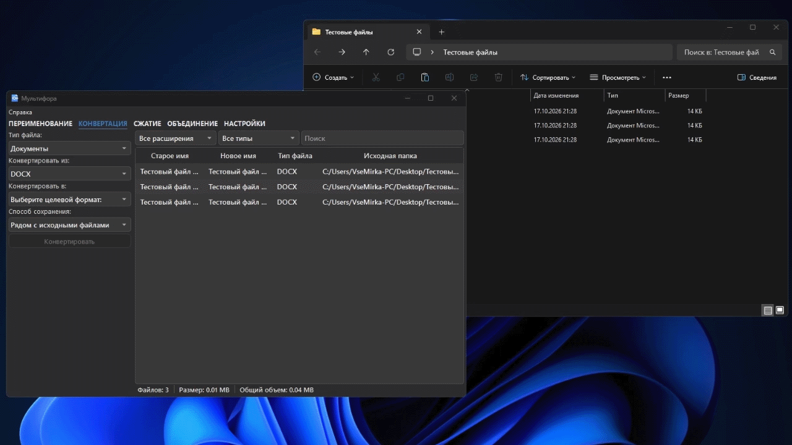

Конвертация и форматы
Конвертация преобразует документы и изображения в другой формат. Сначала добавьте подходящие файлы, затем на вкладке КОНВЕРТАЦИЯ выберите тип, исходный и целевой формат.

Порядок действий
- Добавьте в очередь файлы одного типа или выделите нужные строки.
- Выберите тип файла.
- Выберите формат «Конвертировать из».
- Выберите формат «Конвертировать в».
- Задайте способ сохранения и при необходимости папку результата.
- Нажмите «Конвертировать».
Куда сохраняются результаты
| Режим | Результат |
|---|---|
| Спрашивать каждый раз | Папка выбирается перед обработкой. |
| Рядом с исходными файлами | Результат лежит возле каждого источника. |
| В папку «Конвертированные» | Создаётся подпапка рядом с источником. |
| В отдельную папку | Все результаты сохраняются в выбранное место. |
Поддерживаемые категории
| Тип | Примеры исходных форматов | Примеры целевых форматов |
|---|---|---|
| Документы | DOC, DOCX, PDF, ODT, RTF, TXT, HTML, MD, EPUB, FB2 | DOC, DOCX, PDF, ODT, RTF, TXT, HTML, MD |
| Изображения | JPG, PNG, WEBP, BMP, TIFF, GIF, ICO, AVIF, HEIC, SVG, PSD | JPG, PNG, WEBP, BMP, TIFF, GIF, ICO, AVIF, HEIC, PDF, SVG |
Список в программе показывает только совместимые варианты для выбранного исходного формата. Конвертация в тот же формат не предлагается.
См. также: полное руководство и устранение неполадок.